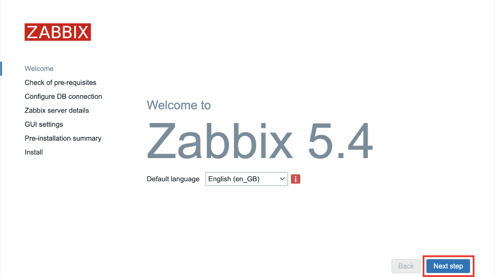
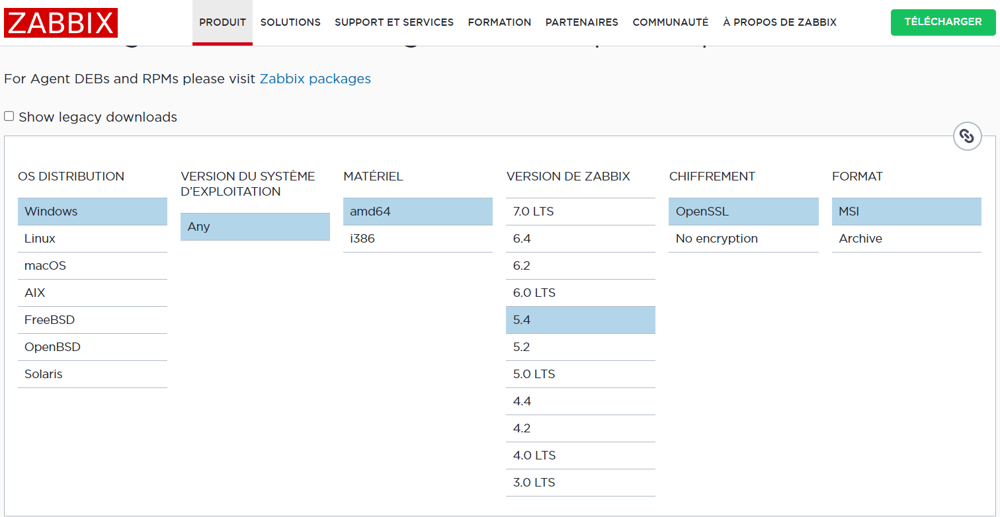
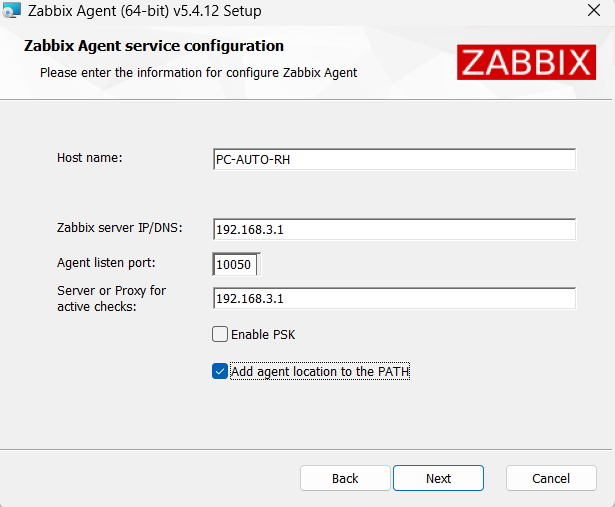
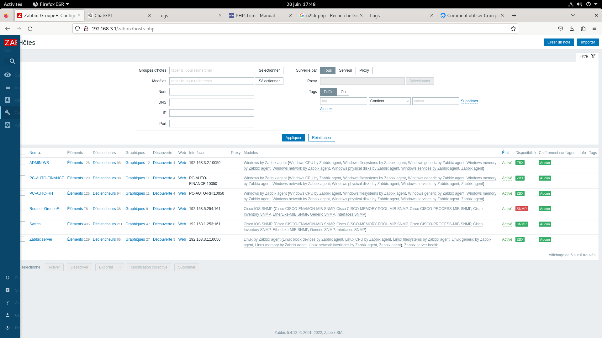
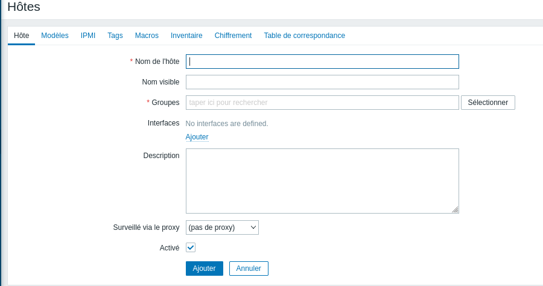
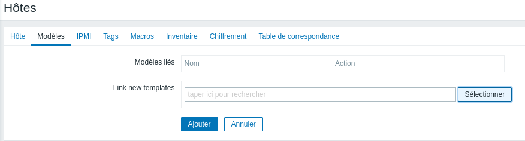

Installation d'un serveur Zabbix et d'un client Windows Zabbix
Installation des paquets
On doit installer les différents paquets permettant d'installer le serveur :
sudo dpkg -i zabbix-release_5.4-1+debian11_all.deb
sudo apt update
Puis, on installe les différents paquets nécessaires pour créer le serveur Zabbix :
Créer la base de données
Nous allons maintenant, avec MariaDB, créer la base de données pour Zabbix :
mysql> create database zabbix character set utf8 collate utf8_bin;
mysql> create user zabbix@localhost identified by 'root';
mysql> grant all privileges on zabbix.* to zabbix@localhost;
mysql> quit;
Puis dans le fichier, /etc/zabbix/zabbix_server.conf, nous devons ajouter cette ligne :
Démarrer le serveur et l’agent Zabbix
Maintenant, nous pouvons démarrer le serveur :
sudo systemctl enable zabbix-server zabbix-agent2 apache2
Configuration
Pour réaliser la configuration de Zabbix, nous nous connectons à l'ip du serveur : 192.168.3.1 et nous arrivons sur cette page :

Il suffit suivre les instructions et d'appuyer sur Next Step, puis Finish pour finir l'installation.
Au final, nous pouvons nous connecter au serveur Zabbix et arrivons sur cette interface :
On change ensuite les droits du dossier mail pour que les utilisateurs puissent y accéder avec chmod 777 /var/mail
On redémarre ensuite le service dovecot avec systemctl restart dovecot
Création d'un agent Windows sur le client
Pour que le serveur Zabbix puisse monitérer les clients du réseau. Nous devons installer un agent Zabbix sur les clients et rajouter un hôte sur le serveur. Pour installer un agent Zabbix sur Windows :
- Installer le .msi sur le site de Zabbix :
- Sur l'invite d'installation, nous rentrons les différentes informations qu'il nous demande :
- Puis nous suivons les étapes au fur et à mesure.


Création de l'agent Windows sur le server
Maintenant, nous devons configurer l'agent Zabbix sur le serveur. Sur cet onglet :

Nous cliquons sur Créer un hôte et nous arrivons sur cette page :

Dans Nom de l'hôte, nous mettons le nom du client. Dans Groupes, nous cliquons sur Sélectionner et prenons Discovered hosts.
Ensuite, dans Interfaces, nous sélectionnons Agent et nous mettons l'adresse IP du client (l'agent).
Enfin, dans l'onglet Modèles, nous choisissons la Template : Templates/Operating systems :

Nous pouvons donc appuyer sur Ajouter et l'agent est créé.
Nous avons réaliser cette manipulation pour tous les PCs clients ainsi que le PC avec Windows Server, et le routeur et le switch. Au final, nous obtenons :